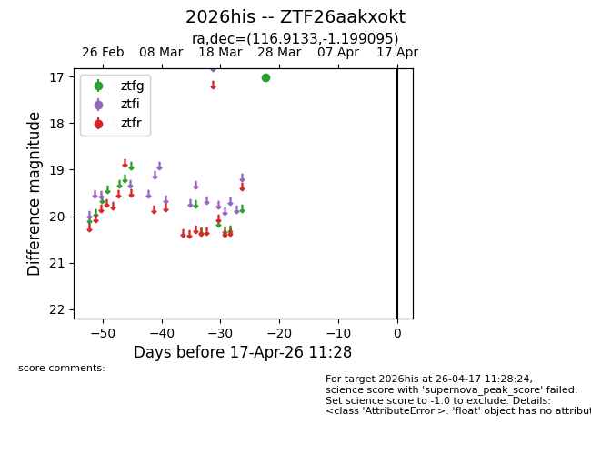
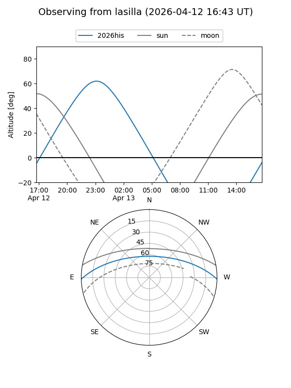
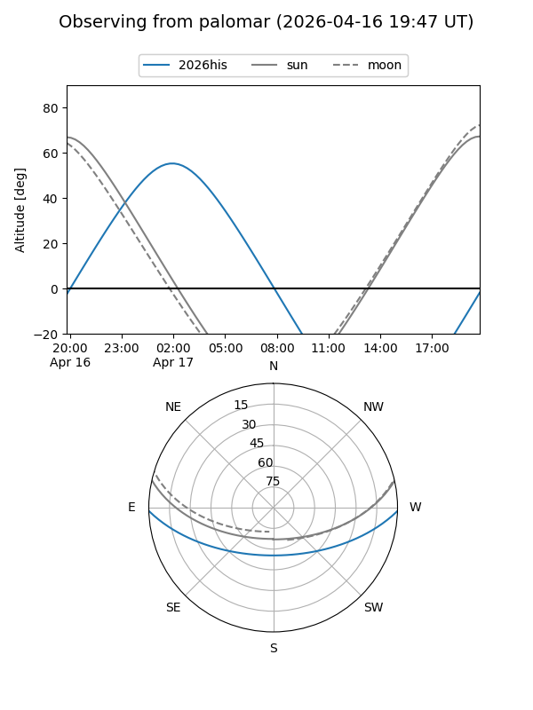

2026his
Target 2026his at 2026-04-17 11:35
Aliases and brokers:
FINK: link
Lasair: link
ALeRCE: link
TNS: link
YSE: link
alt names
ZTF26aakxokt (ztf,fink_ztf)
2026his (tns,yse)
Coordinates:
equatorial (ra, dec) = 116.9133,-1.19910
equatorial (HMS+DMS) = 07:47:39.18,-01:11:56.74
galactic (l, b) = (220.5274,+11.91900)
Flags:
Photometry:
last ztfg=17.02
1 ztfg detections
Lightcurve

Visibility


Additional plots